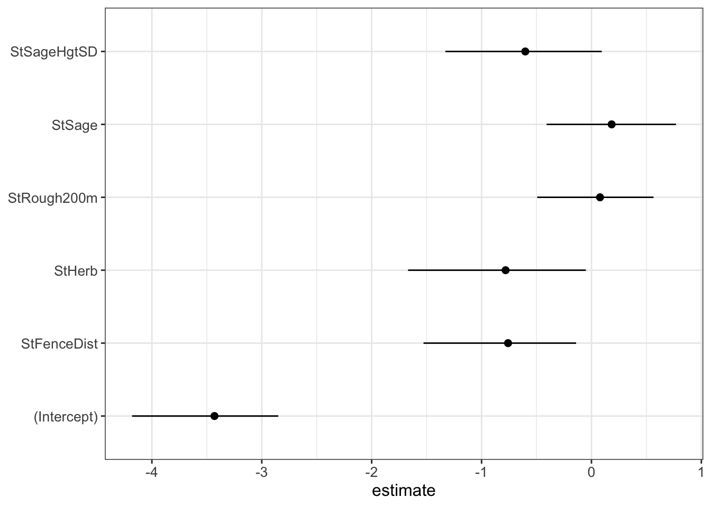

Chapter 8 Logistic Regression
8.1 Binary Response Variable
As with the previous chapter, much of the material presented here has been adapted from Inchausti. However, I have added a large amount of information that makes the content more relevant to the course content and student’s research projects. Logistic regression is used when the response variable takes on only two values. In these cases the binomial distribution is the only possible probability distribution. It was developed to calculate the probability of obtaining a “success”. In most cases in ecology and environment the definition of “success” is somewhat arbitrary and can take on many different ecological definitions. Originally success was defined as the ‘desired’ outcome of a binary event. However, we try to ‘desire’ any particular outcome. In logistic regression the response variable are coded as either 0 or 1. In other words, the event you are trying to predict either occurred or it did not occur.
As with other GLMs, the objective of a logistic regression is to understand the relationship between the explanatory (\(x\)) variables and the mean of the response variable. However, as explained in lecture, when the response variable is not normally distributed, this relationship requires the link function (\(g\)). The link function is applied to the response variable in order to ‘linearize’ the relationship. The general role of the link function is represented by the following equation:
\[g(E(Y)) = X\beta\]
Generally, this equation means that the product of the link function, \(g\) and the expected value of \(Y\) \(E(Y))\) is explained by the explanatory covariates \(X\) and the estimated coefficients \(\beta\). The logit link function is used for logistic regression.
8.1.1 Logit Link Function
Typically, the link function is the most challenging aspect of GLMs for new students to understand. In order to understand the logit link function and how it applies to logistic regression, we need to first understand the fairly intuitive concept of the odds ratio. Given that our outcome variable is a 1 or 0, we are assuming the events are independent of each other. We frequently relax this assumption in some applications of logistic regression in ecology, but we will ignore that complexity for now and focus on events that are truly independent of each other. That means if the probability of an event (often indicated by Greek letter \(\pi\)) occurring is 0.75 we know the probability of the even not occurring is 0.25 or (1 - \(\pi\)) = 0.25. Therefore (and this is important) we can represent the relative likelihood of two events (1 or 0) as the ratio of their probabilities:
\[\frac{\pi}{(1-\pi)} = \frac{0.75}{0.25} = 3:1\]
This is the odds ratio. We interpret this to mean that the occurrence of the event (1) is three times more likely than the other condition (e.g., non-occurrence or 0). Usually, statistics text books and examples use coin flips. The odds ratio of a fair coin flip is 0.5 or 1:1. The odds ratio maps the probability \(\pi\) of an event onto the positive real line [0, $$]. The logit link function is the log of an odds ratio:
\[logit(\pi) = log\frac{\pi}{(1-\pi)}\]
This function maps the odds ratio onto the real line (i.e., a line with a fixed scale such that every real number corresponds to a unique point on the line). This, in effect, ‘linearizes’ the relationship between our explanatory \(x\) variables and our binary response variable. Therefore, the logistic regression establishes a linear relation between the mean of the response variable \(E(Y)\) and the explanatory variables as logit(\(\pi\)) = \(X\beta\). The response variable [1, 0] is not transformed in anyway. It is now related to the explanatory variables using the logit link function. Once the parameters \(\beta\) are estimated, the equation includes the logit link on the left hand side of the equation and the relationship between \(\pi\) and \(X\) is then linear on the scale of the link function.
In order to compare the observed outcome data (1, 0) with model predictions, one more step is required. The link function must be inverted to obtain the predictive relationship between each side of the equation. This is necessary because the logit function maps a probability onto the real line [0, \(\infty\)], but the inverse maps any value of \(X\) onto the the unit interval [0,1] of interest to predict the \(\pi\) parameter of the binomial distribution (along with mean and variance) as a function of the explanatory variables. The inverse logit function is:
\[logit^{-1}(\pi) = \frac{exp(X\beta)}{1+exp(X\beta)}\]
This inverse logit function takes the values of the explanatory variables \(X\) and the associated estimated \(\beta\) parameters and predicts the probability of observing a ‘success’ (i.e., 1) for every value of the explanatory variables.
From a practical standpoint, the link function allows us to produce continuous predictions across each value of \(X\) to understand how those variable influence the probability of a “success” or positive outcome (i.e., 1)
8.2 Ecological Applications
One of the most common application of logistic regression in ecology is to predict a species presence. In order to build these types of models it is critical that we have data (i.e., explanatory variables) that characterize where the species is present [1] and where the species is absent [0]. If we only have presence data, then a logistic regression is not appropriate because, functionally, all we have are 1s in our response variable. We know the presence of animals and plants is almost always non-random and can be influenced by many potential covariates including both biotic and abiotic explanatory variables. Often times these explanatory data are collected in the field by research technicians; however, it is also common to use spatial data (e.g., GIS data) to summarize relevant ecological covariates.
8.3 Loggerhead Shrike Example
Details on the study (e.g., questions, methods) will be provided in lecture. Here we will work with the data and fit a logistic regression.
#Load Packages---
list.of.packages <- c(
"ggplot2", # for graphing
"ggeffects", # model effects plots
"GGally", # ggpairs
"broom", # for plotting coefficients
"DHARMa", # Residual analysis
"qqplotr", # residual plots
"cowplot") # plot_grid
# Check you have them in your library
new.packages <- list.of.packages[!(list.of.packages %in% installed.packages()[,"Package"])]
# install them if you don't have them and then load.
if(length(new.packages)) install.packages(new.packages,repos = "http://cran.us.r-project.org")
lapply(list.of.packages, require, character.only = TRUE)Next we load the data. The data can be downloaded from the UW LEARN site.
LOSHdata<-read.csv("DATA/LOSHdataFinal.csv",header=TRUE, as.is=TRUE)
# case needs to be a factor for ggpredict to work
LOSHdata$case <- as.factor(LOSHdata$case)
summary (LOSHdata) # examine the data - not printed here8.3.1 Standardize variables
Recall from previous lectures the importance of standardizing variables prior to modelling. Here we use a custom user-defined function for standardization for clarity and to present an example of a simple function. However, this can also be achieved with the dplyr package using mutate and scale functions.
##standardizing the variables - putting them on the same scale
standfunc<-function(x){(x-mean(x,na.rm=T))/sd(x,na.rm=T)} # create a function to standardize the values (center the mean on 0)
colnames(LOSHdata)
LOSHdata$StSageHgtSD<-standfunc(LOSHdata$SageHgtSD)
LOSHdata$StBare<-standfunc(LOSHdata$Bare)
LOSHdata$StHerb<-standfunc(LOSHdata$Herb)
LOSHdata$StSage<-standfunc(LOSHdata$Sage)
LOSHdata$StShrub<-standfunc(LOSHdata$Shrub)
LOSHdata$StRough200m<-standfunc(LOSHdata$Rough200m)
LOSHdata$StFenceDist<-standfunc(LOSHdata$FenceDist)
LOSHdata$StPowerDist<-standfunc(LOSHdata$PowerDist)8.3.2 Correlations
Examine correlations in potential explanatory variables.
ggpairs(data = LOSHdata,
columns = 10:16,
mapping = aes(color=factor(case), shape=factor(case)),
upper = list(continuous = wrap("cor", size=2.5))) +
theme_bw() +
theme(strip.background = element_rect(colour="black", fill="white"),
strip.text=element_text(size=6),
axis.text = element_text(size=6, angle=30, hjust=0.5))As a reminder, when potential explanatory variables are highly correlated, they cannot be included in the same model. Therefore, if two variables are highly correlated you have to choose one of them to retain in the final model statement. We went through multiple approaches for making this decision in class. As you can see in the correlation plot above, we have a number of highly correlated variables. These correlations are not particularly surprising given what we know about the sagebrush ecosystem. For example, there is high positive correlation (r = 0.97) between sagebrush cover and shrub cover which was expected given that sagebrush (Artemisia sp) was the dominant shrub species in the study site. Additionally, we see a strong negative correlation (r = -0.81) between bare ground and herbaceous cover.
8.3.3 Model Fitting
The syntax for fitting a logistic regression in R is very similar to the syntax we have seen so far and uses the glm function. This function is in the stats package which is loaded by default every time you initiate R. Of the seven candidate variables remaining we excluded Bare and Shrub due to high correlations. We chose to drop those variables because they are less relevant to ecological questions of interest and management activities within sagebrush ecosystems. When using the glm function you must specify the probability distribution used to model the response variable. For logistic regression, this is typically family = binomial which has the default logit link function. Therefore, our model including all remaining covariates is written in R as:
m1 <- glm(case ~ StSageHgtSD + StHerb + StSage + StRough200m + StFenceDist, family = binomial, data = LOSHdata)
summary(m1)##
## Call:
## glm(formula = case ~ StSageHgtSD + StHerb + StSage + StRough200m +
## StFenceDist, family = binomial, data = LOSHdata)
##
## Coefficients:
## Estimate Std. Error z value Pr(>|z|)
## (Intercept) -3.431 0.335 -10.24 <2e-16 ***
## StSageHgtSD -0.602 0.362 -1.66 0.097 .
## StHerb -0.781 0.415 -1.88 0.060 .
## StSage 0.184 0.299 0.61 0.539
## StRough200m 0.078 0.266 0.29 0.770
## StFenceDist -0.759 0.352 -2.15 0.031 *
## ---
## Signif. codes: 0 '***' 0.001 '**' 0.01 '*' 0.05 '.' 0.1 ' ' 1
##
## (Dispersion parameter for binomial family taken to be 1)
##
## Null deviance: 160.81 on 419 degrees of freedom
## Residual deviance: 147.45 on 414 degrees of freedom
## AIC: 159.4
##
## Number of Fisher Scoring iterations: 7The model output is very similar to that of the general linear model explored earlier in the course. The output includes the model intercept, the partial slopes for each variable included in the model, the standard error associated with each estimate, the Wald statistic (= \(\beta\) estimate/SE(estimate)), and the statistical significance indicating whether the coefficient estimate differs ‘significantly’ from zero. The Null deviance is the estimated deviance of an intercept-only model and the Residual deviance is the remaining deviance after including the five explanatory variables.
The greater the reduction from the null to the residual deviance, the greater the proportion of deviance explained by the model. We can calculate McFadden’s analogue of R^2 which indicates the reduction from null to the residual deviance as:
## [1] 0.0831The AIC value is used to compare models developed with the same data.
Since we standardized the variables so they have a mean of zero, we can extract some information from the intercept. The intercept of -3.43 is the value of logit(\(\pi\)) for a “typical” site with average values of all the explanatory variables. We can transform this value into an odds ratio by ‘exponentiating’ (is that a word?) the intercept value exp(-3.43) = 0.03. This value is much smaller than one, indicating LOSH nests are much more likely to be absent then present in a typical site. There are some assumptions that we have made in our model, which may not be true. We will discuss these assumptions and their potential impact in class. The main assumptions are associated with ‘true’ vs. ‘psuedo’ absences and sample size in our unused sites.
Scaling variables prior to modelling has the added benefit of facilitating direct comparison of variables measured across different scales. We can compare the magnitude of the \(\beta\) coefficient estimates directly. We can compare the relative ‘strength’ of an effect with simple division. Two of the most influential variables are herbaceous cover and distance to a fence. We can see the estimates are close to each other, but the herbaceous cover estimate is slightly higher. Dividing one into the other (-0.7814/-0.7589 = 1.03) tells us the relative effect of herbaceous cover is only 3% stronger than the relative effect of distance to fence.
Recall that the \(\beta\) coefficient for standardized variable indicates the changes in logit(\(\pi\)) with a change in one standard deviation of an explanatory variable. In order to interpret this on actual scale of our data, we need to calculate the standard deviation of the explanatory variables of interest. As an example, we will focus on distance to fence. However, there is an important consideration when interpreting the coefficients on distance variables. In habitat selection studies, such as this one, a positive coefficient estimate typically denotes a preference for a particular habitat component. In other words, an increasing value in the \(x\) (e.g. a particular habitat component) indicates an increasing probability of use or selection and the opposite is true in that a negative coefficient estimate indicates avoidance of a particular habitat type. However, distances are unique. If you are using the Euclidean distance to a feature, a negative coefficient estimate indicates a preference for that habitat type. In other word, the probability of occurrence (or selection, or use) decreases (negative coefficient) with increasing distance from the feature. Therefore, the negative coefficient estimated for distance to fence indicates selection for proximity to fences, which is consistent with what we know about the ecology of the species.
## [1] 383If we increase the distance from a fence by 382m, logit(\(\pi\)) will decrease by 0.756. Exponentiating the partial slope produces an odds ratio that is easier to interpret.
## [1] 0.468This means the probability of presence is 0.468 less likely than absence with an increase of 382m to the nearest fence. It is important to remember that all binary GLMs predict a linear relation in the scale of the logit link function, which become logistic when the function is inverted to compare model predictions with the data. The non-linearity of the inverted link function mean the slopes can no longer be interpreted as the change in the mean of the response variable per unit change of the explanatory variable. This is because the central range of the logistic curve is steeper than the tails (which are flatter). Therefore any unit change of an explanatory variable in the midpoint values will result in a larger change in the probability of presence than when the change occurs at the tail ends of the range. There is a rule-of-thumb to interpret the values in logistic regression in terms of probabilities (not logits or odds ratios). For example, distance to fence coefficient estimate -0.75893/4 = -0.19 means that a change of one standard deviation (382m) would produce a 19% reduction in the probability of presence. This estimate represents the midpoint values and therefore changes elsewhere in the range would likely entail smaller changes in the probability of presence.
8.3.4 Plot Coefficients
It is always useful to plot the coefficient estimates and their associated likelihood confidence intervals. This type of figure is one of the key results that you should present in any manuscript presenting this type of model. There are, of course, many ways to do this. Inchausti provides an excellent example using broom package.
## # A tibble: 6 × 7
## term estimate std.error statistic p.value conf.low conf.high
## <chr> <dbl> <dbl> <dbl> <dbl> <dbl> <dbl>
## 1 (Intercept) -3.43 0.335 -10.2 1.33e-24 -4.18 -2.85
## 2 StSageHgtSD -0.602 0.362 -1.66 9.67e- 2 -1.33 0.0937
## 3 StHerb -0.781 0.415 -1.88 5.98e- 2 -1.67 -0.0512
## 4 StSage 0.184 0.299 0.614 5.39e- 1 -0.408 0.770
## 5 StRough200m 0.0780 0.266 0.293 7.70e- 1 -0.493 0.565
## 6 StFenceDist -0.759 0.352 -2.15 3.12e- 2 -1.53 -0.139param.m1 <- tidy(m1, conf.int=T) # save tibble
# plot coefficient estimates and confidence intervals
ggplot(param.m1, aes(x=term, y=estimate)) +
theme_bw() +
geom_point(col="black", size=2) +
geom_linerange(aes(ymin = conf.low, ymax = conf.high)) +
coord_flip() +
labs(x = "Parameter") +
theme (axis.title = element_text(size = 12),
axis.text = element_text(size = 10),
axis.title.y = element_blank())
8.3.5 Plot Model Predictions
One of the most informative way to present your model results is using figures presenting the predicted probabilities. This can be accomplished using the ggpredict function from the ggeffects package. These plots are often referred to as “conditional plots” or “marginal effects plots”. Essentially, the plots represent the predicted values over the range of a covariate while holding all other covariates in the model at their means. The ggpredict command uses the inverse of the logit link function to generate the curves using the parameter estimates. To create the plots we need to generate the predicted values for each covariate that we want to plot. For this example we will plot two the variables above that have confidence intervals that do not overlap zero.
# Generate predicted values
pred.m1.StHerb=ggpredict(m1, terms = c("StHerb [all]"))
pred.m1.StFenceDist=ggpredict(m1, terms = c("StFenceDist [all]"))
# Plot predictions
plot.m1.StHerb=plot(pred.m1.StHerb, colors="greyscale") +
labs (x="Percent Herbaceous cover (std)", y = "Probability of presence") +
theme(plot.title=element_blank(),
axis.title.y=element_blank(),
axis.title.x=element_text(size=10),
axis.text=element_text(size=8))
plot.m1.StFenceDist=plot(pred.m1.StFenceDist, colors="greyscale") +
labs (x="Distance to Fence (std)", y = "Probability of presence") +
theme(plot.title=element_blank(),
axis.title.y=element_blank(),
axis.title.x=element_text(size=10),
axis.text=element_text(size=8))
plot_grid(plot.m1.StHerb, plot.m1.StFenceDist, ncol=1,
labels=c('A', 'B'),
align="v", label_x=0.95)8.3.6 Model Assessment
Model assessment through inspection of the model residuals is not as straight forward when a link function is involved. With a general linear model we could investigate model fit with plot(modelname). Try that with this model and take a look at the figures produced by entering plot(m1) into your R console. The figures look strange. In order to assess model fit in a logistic regression several other steps are required and make use of randomized quantile residuals. These values are estimated using simulated data from the fitted model to generate a cumulative density function of the response variable. Many more details and specific equations are presented in Chapter 8 of the Inchausti book. For our purposes, we can leave the math to those experts with maths degrees and focus on the general steps. We will use the package DHARMa to generate randomized quantile residuals for our GLMs. The process involves three steps. First, simulate new dat sets from the fitted GLM. These simulations then allow for the estimate of the cumulative distribution function of each observed value of the response variable for the simulated data set. Finally, the package calculates the randomized quantile residual of each observed value of the response variable. These data are then used to produce residual plots analogous to those we used in the last chapter in the Model Validation section.
resid.m1 <- broom::augment(m1) # store residuals
# generate randomized quantiles
res.m1 <- simulateResiduals(fittedModel = m1, n = 1e3, integerResponse = T, refit = F, plot = F)
# replace default deviance residuals with simulated
resid.m1$.std.resid = residuals(res.m1, quantileFunction = qnorm)
# generate plots for residual fit.
qq.m1 <- ggplot(data=resid.m1, aes(sample = .std.resid)) +
geom_qq(distribution = qnorm, size = 1) +
theme_bw() +
stat_qq_line() +
stat_qq_band(alpha=0.3) +
labs(x="Theoretical Quantiles", y = "Sample Quantiles") +
theme(axis.title=element_text(size=12),
axis.text=element_text(size=10))
res.fit.m1 <- ggplot(data=resid.m1, aes(x =.fitted, y=.std.resid)) +
geom_point(col="black", size=1) +
geom_hline(yintercept=0, linetype = 2, linewidth = 1) +
theme_bw() +
labs(x = "Fitted", y="Residuals") +
theme(axis.title=element_text(size=12),
axis.text=element_text(size=10))
res.Herb.m1 <- ggplot(data=resid.m1, aes(x=StHerb, y=.std.resid)) +
geom_point(col="black", size=1) +
geom_hline(yintercept = 0, linetype=2, linewidth=1) +
theme_bw() +
labs(x="Herb (std)", y="Residuals") +
theme(axis.title.y=element_blank(),
axis.text = element_text(size=12),
axis.title.x=element_text(size=10))
res.FenceDist.m1 <- ggplot(data=resid.m1, aes(x=StFenceDist, y=.std.resid)) +
geom_point(col="black", size=1) +
geom_hline(yintercept = 0, linetype=2, linewidth=1) +
theme_bw() +
labs(x="Herb (std)", y="Residuals") +
theme(axis.title.y=element_blank(),
axis.text = element_text(size=12),
axis.title.x=element_text(size=10))
Cook.m1 <- ggplot(data=resid.m1, aes(x=1:nrow(resid.m1), y=.cooksd))+
geom_linerange(aes(ymin=0, ymax=.cooksd))+
theme_bw() +
labs(x="Order of data", y="Cook's distance") +
theme(axis.title=element_text(size=12),
axis.text = element_text(size=10))
plot_grid(qq.m1, res.fit.m1, res.Herb.m1, res.FenceDist.m1, Cook.m1, ncol=2,
labels = c("A", "B", "C", "D", "E"),
align = "hv", label_x = 0.85, label_y = 0.95)